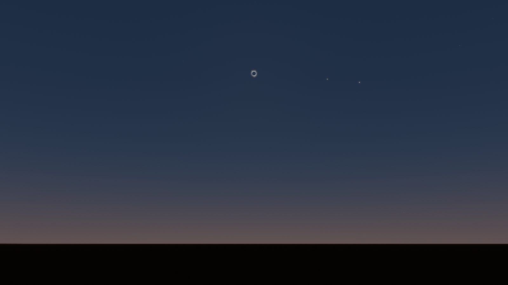

The total solar eclipse of 2 August 2027, in virtual reality
On 2 August 2027, the Moon's shadow crosses southern Spain and North Africa. Totality lasts up to 6 minutes 23 seconds. In SpaceWise you can stand inside it now.

Get SpaceWise on the Meta Horizon Store
The eclipse
- Date: 2 August 2027. Greatest eclipse is at about 10:06 UTC.
- Type: total.
- Longest totality: 6 minutes 23 seconds, at greatest eclipse in Egypt, near Luxor.
- The path: the narrow path of totality crosses southern Spain and North Africa. Outside the path, a wide area sees a partial eclipse. This includes the United Kingdom.
These figures come from NASA's Five Millennium Canon of Solar Eclipses and NASA's future eclipses page.
Stand inside it in SpaceWise
- Open the tablet and go to the Time page.
- Choose the date: 2 August 2027.
- Open Eclipses and choose the total solar eclipse of 2 August 2027.
- Choose "Stand inside it". You arrive 90 seconds before totality, at a named place near the central line.
- Watch the sky go dark, the stars and planets come out, the glow spread all round the horizon and the corona appear.
You can also choose "See it from space". The view goes 18,000 km above the Moon's shadow, so you can watch the shadow cross the Earth.
See it from your town
The app's "Next eclipse near you" gives the next solar eclipse seen from a town or city that you choose. It says how much of the Sun the Moon covers there, and the local time. "Stand there" opens the ground view at that place. The app has 330 towns and cities, with every UK and Irish town of 100,000 people or more.
How the app works it out
SpaceWise computes every eclipse from 3000 BC to AD 3000 from its own model of the Sun, the Moon and the Earth. Nothing is downloaded. We test the app against 17 solar eclipses and 15 lunar eclipses from NASA's Five Millennium Canon. The 2 August 2027 eclipse is one of them. The skyline round each of the 330 places comes from real height data (GMTED2010, from USGS and NGA).
Eye safety
Never look at the real Sun without proper eclipse glasses or a safe solar filter, except during totality itself. In the headset you see a picture, so it is safe. Outside, follow NASA's eclipse safety advice.
More
- Help and support
- Guide for teachers: the eclipse is a good lesson for the Earth and space topic.
- Privacy policy: the town you choose stays on the headset. The app has no GPS and asks for no location permission.